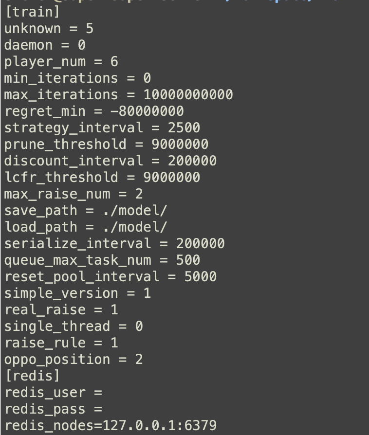

牌局状态
处理座位、筹码、公共牌、下注轮、合法动作与终局收益。

处理座位、筹码、公共牌、下注轮、合法动作与终局收益。
围绕信息集遗憾、平均策略、MCCFR 采样和多人自我博弈迭代。
根据当前状态加载策略并输出 Fold、Call 或 Raise，用于延迟基准评估。
每一手牌从私牌、盲注和座位开始，经过翻牌前、翻牌、转牌与河牌。引擎在每个行动点构建信息集，依据可行动作和平均策略选取决策，并在摊牌或弃牌结束后把收益用于更新遗憾值。多人桌还需要同时考虑多名对手和更大的状态空间。
| 模块 | 职责 |
|---|---|
| Pluribus / State | 多人策略搜索、牌局状态和动作推进 |
| Trainer / InfoNode | 自我博弈、信息集、遗憾值和平均策略 |
| GamePool / TaskExecutor | 并行牌局和训练任务调度 |
| CardAbst / CardCluster | 手牌与公共状态抽象 |
| Configure | 训练迭代、模型路径、任务队列和运行参数 |

截图反映仓库已有配置字段。具体吞吐、收敛性和动作延迟应以可复现基准为准。
适合研究 CFR/MCCFR、不完全信息博弈、多人扑克 AI、策略抽象和 C++ 服务端集成的开发者。它不是游戏外挂说明，也不应被用于违反法律、平台条款或公平竞技规则的用途。